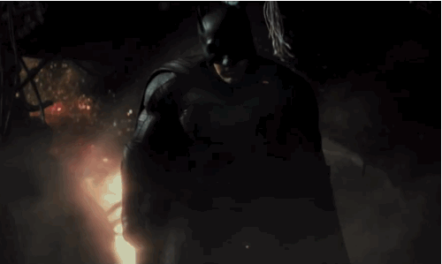
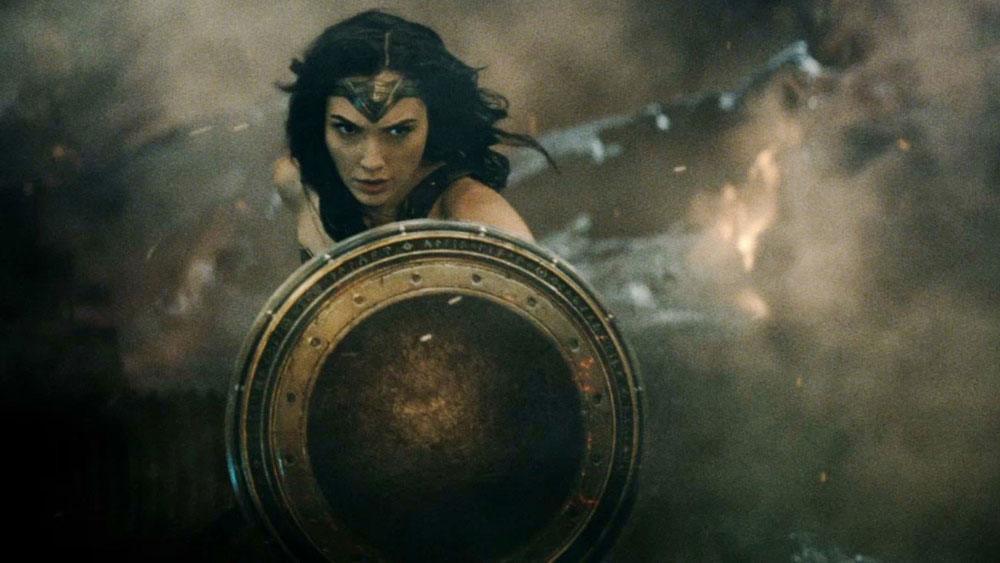
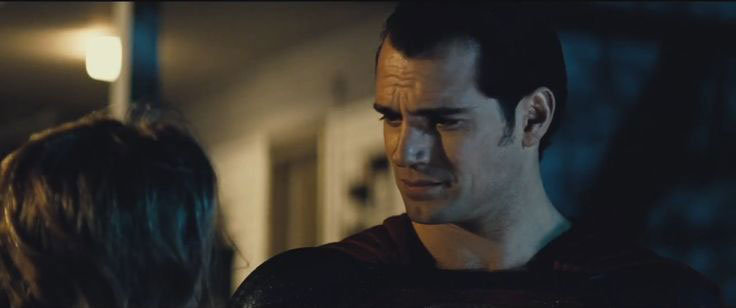
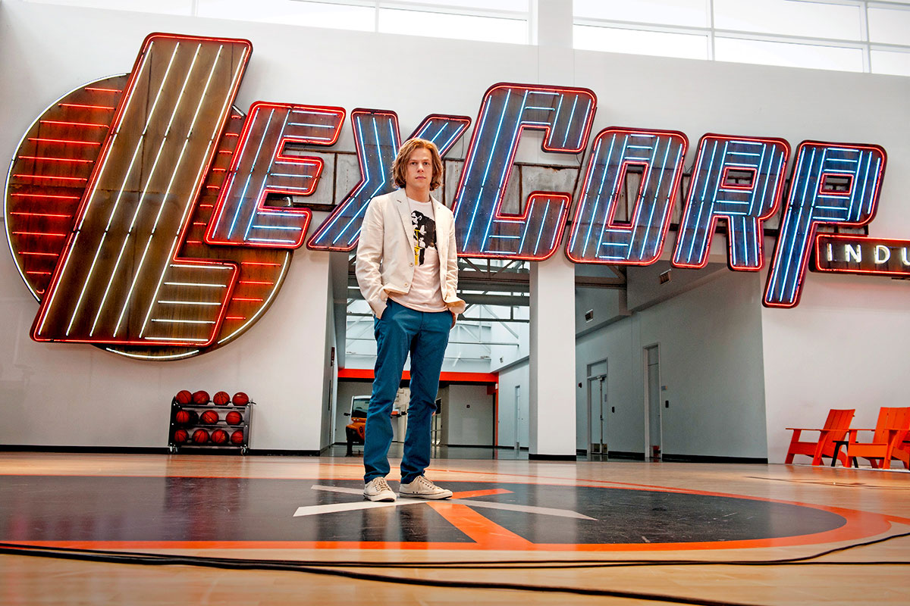
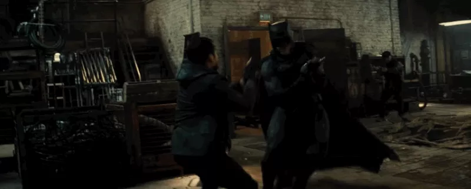
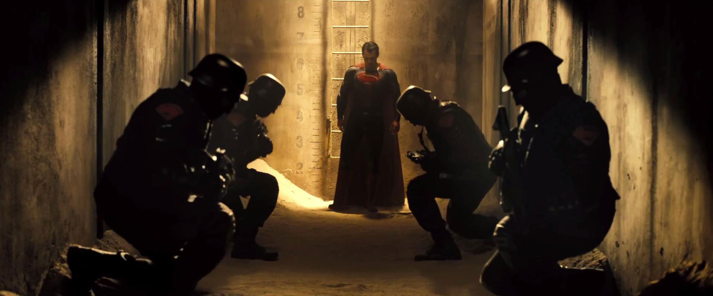

Back in 2001, before smart phones were a global pandemic, before comic book characters were the kings of pop culture, and long before anyone had really heard about JJ Abrams and Jennifer Garner, a TV show named ALIAS made its debut. I remember seeing the show title when it was advertised, and not even knowing how to correctly pronounce it. The presenter at the local TV station that it aired on didn't know either (Uh-laayus). *eye roll*
Coming out of an era where most mainstream TV shows in the Action genre were driven by a male-lead, Alias stood out. Its main protagonist was a 20-something girl, who at first glance looked like the quintessential girl-next-door, complete with cute dimples, girly voice and bubbling personality. But as we were introduced to Sydney Bristow in the Pilot episode, it was evident that this girl could kick your ass. And she could do it with a bullet in her shoulder and with several of her teeth having just been pulled. She could take down an bevy of bad guys while rocking electric red hair and running mascara, and still look damn good doing it. And she could switch from a frightened little girl trying to gain sympathy from her enemies, to a resilient and calculating secret-agent taunting her captors to "start at the back" as they proceed to torture her for information by pulling her teeth out.
Synopsis
Alias followed the story of Sydney Bristow, a CIA agent who must navigate the tumultuous arena of espionage, while trying to maintain some semblance of a life. She turns agent, double agent and triple agent throughout the course of the show; suffers betrayal many times over by those she trusts the most; and along the way loses many of her loved ones as a result of her dangerous occupation. Mixed up in all of this were themes of international intrigue, loyalty, relationships, family, mythical prophecies, ancient technologies, doomsday events, and everything in between. Somehow, Alias managed to integrate a wide variety of genres into a single show, blurring the lines between action, drama, romance and during the latter seasons, even science fiction. It also explored the complex relationship between Sydney and her father, and the story arc of how they begin the series and where they end up is truly remarkable.
The series became iconic for Sydney's various disguises on each of her missions. Each episode would feature Jennifer Garner embodying a completely different persona, down to speaking foreign languages, wearing an assortment of crazy outfits and having outrageous hairstyles.
The show kind of hit its peak around the 3rd and 4th season, and began to gradually decline in terms of coherency and realistic storytelling. That seems to be a pattern with JJ Abrams' shows, where his plots get a little too twisty for their own good. But for what it was, Alias was ever entertaining and never boring.
STANDOUTS IN THE SERIES
01. Batfleck
Despite what the rest of the internet has to say on the subject, I've always been a fan of Ben Affleck. I forgive him for the J-Lo phase (we all make mistakes), and he has certainly come a long way since 2003's Daredevil.
Against all odds, and a bevy of naysayers, everyone seems to agree, this just might be the greatest movie incarnation of Batman we have ever seen. Utterly menacing and brutally bad-ass, this is the first Batman that I truly fear, and I mean that in a good way. I mean seriously, would you want to run into this guy in a dark alley? ~ Shudder ~

02. Gal Gadot's Wonder Woman
Another casting choice that set the internet on fire, but she's sure done a 180, with early reviews hailing her as the best part of the movie, especially considering that she probably has a miniscule amount of screen time in comparison to her male superhero counterparts. I could write an entire article on why I think her casting alone is an important step forward for Hollywood, but I'll hold off on that till I've seen the movie. But rest assured, from what I've seen and heard so far, this woman is both beauty and beast in the best way possible.

03. Conflicted Superman
If I had to choose one thing that I liked about Man of Steel, I would say Henry Cavill. If I had to choose two, then the other would be that the Superman of that movie was more humanized than anything I had seen before. He made mistakes, he ran away from his powers, and he had realistic human parents who mentored him in exactly the way we would expect our parents to treat us if we suddenly manifested superhuman strength; with protective caution. The world is a scary place, and humans tend to be the worst thing about it, so it makes sense for Superman, as an outsider, to be weary and conflicted about how he goes about things. BvS is poised to bring us more depth in that aspect.

04. The Lex Luthor of today

It seems like almost every casting decision in this movie has been met with trepidation, and Jesse Eisenberg as Lex Luthor is one that still hasn't proven itself to be bankable. But from what they've given us so far, it seems like this incarnation of the billionaire mastermind is moulded after what most modern billionaires look like today. Young, casual, socially awkward, unassuming enough that we would trust them with vast amounts of our personal information… remind you of anyone? (Zucker…cough). And if that's the case, then who better to play this new Luthor than the very actor who is renowned for portraying one of the real-life billionaire masterminds of our generation.
05. Action Action Action
Say what you want about Zach Snyder, but the man knows how to give us great action scenes. And from that Batman trailer sequence alone (you already know what I'm referring to, because yes it was that good), I think it's safe to expect beautiful and brutal action, which is what Zach Snyder excels at capturing (for evidence, see: 300).

06. Story, story, story
BvS is setting up to tackle some heady issues.

Balance of power
The consequences of conflict
Media bias
Government suspicion
Corruption of justice
Prejudice
Conspiracy theories
Faith in humanity as a whole
...just to name a few. Just to be clear, this movie has a flying alien, glowing meteorites, a genetic hybrid monster, and a grown man dressed as a bat. Throwing these real world topics into the mix is what will make the movie worth investing in emotionally.
Are there things that I'm anxious about regarding this movie? Sure. Trying to avoid critic reviews is like holding your breath; you can only do it for so long. Will this be a perfect movie? Highly unlikely. But the thing is, this is Batman v Superman; childhood heroes battling it out on the big-screen like we've never seen them before. Sure there might be things to gripe about. But I don't want to gripe. I don't want to fight. Let's leave that to Bats and Supes.
So I'm setting aside my expectations, and I'm just strapping in for the ride. Just bring it on BvS… I am so ready.